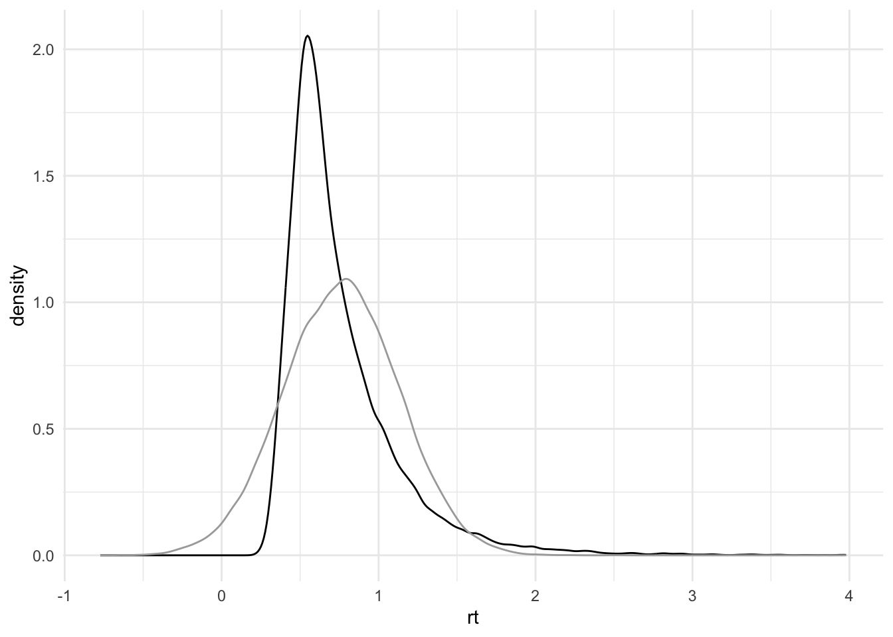

Einführung
Gerda Wyssen ![]()
Daniel Fitze
In der Forschung und Diagnostik interessieren uns oft Eigenschaften eines Prozesses oder einer Person, welche wir nicht direkt messen können. Deshalb werden Testverfahren und Experimente angewendet um diese latenten Variablen messbar zu machen. Mit statistischen Verfahren wird dann versucht aus den gemessenen Daten Informationen über die nicht direkt messbare Eigenschaft zu erhalten.
Herausforderungen in der Analyse von neurowissenschaftlichen Daten
Neurowissenschaftliche Datensätze bringen oft folgende Herausforderungen in der Datenanalyse mit sich:
Kleine Stichprobengrössen (z.B. aufgrund teurer Datenerhebung oder Patientengruppen die schwieriger zu rekrutieren sind).
Viel Heterogenität / Rauschen (z.B. weil der zu untersuchende Prozess schwierig zu isolieren ist, weil Personen sich sehr unterschiedlich verhalten)
Teure Datenerhebung und damit hoher Druck Resultate zu generieren sowie oft keine Möglichkeit das Experiment zu wiederholen (wichtig daher die gute Planung der Analyse sowie Vermeidung von inkonklusive Resultaten)
Ziel ist es also, trotz diesen Hindernissen, möglichst viel Information aus den Daten zu gewinnen. Hieraus entsteht die Notwendigkeit zu unterscheiden zwischen absence of evidence und evidence of absence. Dafür eignen sich die konventionellen statistischen Verfahren oft weniger. Bayesianische Statistik (z.B. bei begrenzten Datensätzen) sowie Äquivalenztests (zum Testen von Nullunterschieden) sind hier vielversprechende Ansätze.
Wir werden uns in den folgenden Veranstaltungen deshalb damit auseinandersetzen
welche Annahmen hinter statistischen Verfahren stecken
welche Fragen mit Bayesianischer Statistik beantwortet werden können
wie Nullunterschiede statistisch getestet werden können
Vorbereitung
- Besprechen Sie in kleinen Gruppen folgende Fragen:
Was ist eine Null-, was eine Alternativhypothese?
Was bedeutet die Distanz zwischen den beiden Mittelwerten?
Was ist statistische Power?
Welche Rolle spielt die Stichprobengröße
Was ist ein p-Wert?
Was sind Typ I und Typ II Fehler?
Welche Fragen können Sie mit einem Nullhypothesen-Test beantworten?
- Können Sie die Begrifflichkeiten in dieser Grafik einordnen?

- Überlegen Sie sich, was Null- und Alternativhypothese in unseren Experimenten sein können.
[10 Minuten]
Hier finden Sie die Daten zum herunterladen.
Lesen Sie anschliessend die Daten ein:
Datengenerierende Prozesse, Simulation und Analyse
Nach dem Data Cleaning und Preprocessing geht es darum, welche Informationen die Daten über den zu untersuchenden Prozess beinhalten. Anhand der Daten sollen also Rückschlüsse auf den Prozess der zu diesen Daten geführt hat gezogen werden.
Bei jeder Datenanalyse müssen zahlreiche Annahmen getroffen werden. Um diese explizit zu machen und auch die Datenanalyse zu planen, hilft oft eine grafische Darstellung. DAGs sind eine Variante davon.
Directed Acyclic Graphs (DAGs)
Ein DAG (directed acyclic graph) eignet sich für die Darstellung komplexer Zusammenhänge in Daten und Prozessen. Mit einem DAG kann veranschaulicht werden, welche Variablen einander beeinflussen. Die Kreise (nodes) werden für einzelne Elemente verwendet und die Pfeile (arrows oder edges) beschreiben die Beziehung zwischen den Elementen. Die Darstellung beschreibt einen Prozess also mit gerichteten (directed) und nicht zyklischen (acyclic) Beziehungen.
Wir können beispielsweise annehmen, dass die Farbe-Wort-Kongruenz im Stroop Task beeinflusst, wie schnell die Aufgabe gelöst werden kann.
Erstellen eines DAGs
1. Beobachtete Variable bestimmen
Die beobachtete Variable nennen wir hier \(y\). Der Kreis ist grau eingefärbt, weil die Werte in dieser Variable gemessen wurde, also bekannt ist.
In unserem Beispiel haben wir die Reaktionszeit gemessen. Im Datensatz enthält die Variable rt die Information, wie schnell eine Person in jedem Trial geantwortethat.
2. Verteilung bestimmen
Es muss festgelegt werden, welche Verteilung die Daten \(y\) am besten beschreibt. Eine Verteilung ist immer nur eine Annäherung, die gemessenen Daten entsprechen dieser Annahme eigentlich nie perfekt. Es geht darum eine Verteilung zu finden die gut genug zu den Daten passt. Jede Verteilung hat Parameter, die geschätzt werden können. Es gibt Verteilungen, welche durch einen Parameter definiert werden, andere brauchen mehrere Parameter.
Eine sehr häufig verwendete Verteilung in statistischen Analysen ist die Normalverteilung. Die Annahme einer Normalverteilung ermöglicht es uns, mit nur 2 Parametern die Daten in der Variable zu beschreiben (natürlich ist das nur eine Annäherung aber meistens eine genügend gute): Dem Mittelwert (\(\mu\)) und der Standardabweichung (\(\sigma\)).

Um die Verteilung unserer Datenpunkte zu bestimmen bzw. zu überprüfen können die Daten in R geplottet werden, z.B. mit geom_histogram. Das Argument binwidth bestimmt, wie breit ein Balken wird (hier 50 ms).
d_stroop |>
ggplot(aes(x = rt)) +
geom_histogram(colour="black", fill = "white",
binwidth = 0.05,
alpha = 0.5) +
theme_minimal()Diese Verteilung könnte beispielsweise mit einer Normalverteilung beschrieben werden. Der Mittelwert und die Standardabweichung können wir uns ausrechnen:
# clean dataset first
mu = mean(d_stroop$rt)
mu[1] 0.7585427sigma = sd(d_stroop$rt)
sigma[1] 0.3668467Um zu schauen, wie gut diese Normalverteilung mit den Parametern \(\mu\) = 0.759 und \(\sigma\) = 0.367 unsere Daten beschreibt können wir die Daten und simulierte Daten mit der angenommenenen Verteilung übereinander plotten:
d_stroop |>
ggplot(aes(x = rt)) +
geom_histogram(colour="black", fill = "white",
binwidth = 0.05,
alpha = 0.5) +
geom_histogram(aes(x = rnorm(1:length(rt), mu, sigma)),
binwidth = 0.05,
alpha = 0.2) +
theme_minimal()Wir können auch density-Plots dafür nutzen:
d_stroop |>
ggplot(aes(x = rt)) +
geom_density(colour="black") +
geom_density(aes(x = rnorm(1:length(rt), mu, sigma)),
colour="darkgrey") +
theme_minimal()
Welche Daten stammen aus unseren Daten, welche entsprechen der Normalverteilung \(N(0.759, 0.367)\) ?
Wie gut passt die Annahme der Normalverteilung für unsere Reaktionszeitdaten?
Finden Sie auf Distribution Zoo eine passendere Verteilung?
-
Prüfen Sie Ihre Verteilung indem Sie unten an den obigen Plot diese Verteilung mit gewählten Parametern folgenden Code einfügen.
Wählen Sie dazu eine Verteilung und passende Parameter auf Distribution Zoo aus.
Schauen Sie unter dem Reiter
Codemit welcher Funktion die Daten inRgeneriert werden können. Wählen SieLanguage: RundProperty: random sample of size naus.Kopieren Sie die Funktion und ersetzen Sie
rnorm(1:length(rt), mu, sigma)in unserem R-Code für das Histogram oder den Density-Plot mit Ihrer neuen Funktion. Dasnmüssen Sie wieder1:length(rt)nennen.
Bei Reaktionszeiten ist die Verteilung gar nicht so einfach anzupassen: Hier finden Sie “besser” geeignete Verteilungen sowie die Möglichkeit für einen vorgegebenen Datensatz oder Ihre eigenen Daten Parameterwerte anzupassen.
3. Weitere Einflussfaktoren
In einem DAG können auch weitere Informationen, zum Beispiel Bedingungen sowie Messwiederholungen, hinzugefügt werden.
\(\mu\) kann sich zum Beispiel in Abhängigkeit der Bedingung (condition) verändern, also je nachdem ob die angezeigte Farbe kongruent war oder nicht.
Wenn wir nun den Einfluss der Bedingung untersuchen möchten, könnten wir uns fragen, wie stark diese eine Veränderung im Wert \(\mu\) bewirkt. Genau dies tun wir z.B. bei Mittelwertsvergleichen wie z.B. bei t-Tests.
Wie würde ein DAG für die Accuracy (Korrektheit) der Stroop-Daten aussehen?
Daten simulieren
Sich Gedanken zum datengenerierenden Prozess zu machen (wie beispielsweise mit einem aufgezeichneten Modell) hilft nicht nur in der Planung der Datenanalyse, sondern ermöglicht u.a. auch das Simulieren von Daten.
Mögliche Schritte in der Datensimulation 
Datensimulation ist nützlich für:
Die Vorbereitung von Präregistrationen und Registered Reports
Testen/Debugging von Analysekripten (weil die ground truth bekannt ist)
Power für komplexe Modelle schätzen
Erstellen von reproduzierbaren Beispielsdatensätzen (für Demos, Lehre, oder wenn echte Datensätze nicht veröffentlicht werden können)
Prior distribution checks in der Bayesianischen Statistik
Verstehen von Modellen und Statistik
Reuse
Citation
@online{wyssen,
author = {Wyssen, Gerda and Fitze, Daniel},
title = {Einführung},
url = {https://kogpsy.github.io/neuroscicomplabFS24//pages/chapters/data_analysis_intro.html},
langid = {en}
}